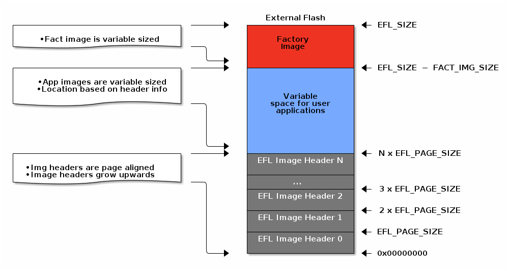

Flash Layout for Off-Chip OAD¶
This section will describe the method for placing images in internal and external flash when using off-chip OAD.
Internal flash refers to the flash memory inside the CC13xx or CC26xx and external flash refers to an external SPI flash memory connected to the CC13xx or CC26xx via SPI.
See requirements below for off-chip OAD.
Requirements and Constraints for Off-chip OAD¶
In order to perform an Off-chip OAD the target system must have:
An off-chip flash storage as large as the application size + one external flash page to store the external flash image header. (default example will use 1MB of external flash)
A serial connection (SPI) is used to communicate with the off-chip flash component.
Free GPIO pins to interface to the external memory (i.e. 4 wires for SPI)
Enough free code space to reserve the entire contents of the last 1-2 flash page(s) for BIM
The following software limitations exist on the external flash:
The maximum number of simultaneously stored OAD images is 256.
The OAD images’ headers shall be stored in the first 1 MBytes of the external flash addressable space.
The total size of the stored images should not exceed 4 GBytes.
Internal Flash Memory Layout¶
The internal flash of the device contains the active user application and the BIM. Off-chip OAD maximizes the available flash space to the user application because of its ability to store the incoming image in external flash during the download process.
Note
When using security, the BIM may use a second page depending on the page size of the device. Consult the BIM’s linker file for more information.
The user application pictured above is responsible for the following:
Implementing the protocol stack specific implementation of the OAD transport
Finding a suitable location in external flash for the image and storing its image header in the table.
External Flash Memory Layout¶
The off-chip flash memory on the CC13xx or CC26xx LaunchPad contains the image header vector
table and the user applications. The memory map layout of the external flash
part is defined in ext_flash_layout.h.
The amount of space reserved for each application is dynamically* sized by the
user application’s implementation of the OAD protocol. The size of the image in
external flash can be determined once the image header vector is sent over the
air.
The application will round up as necessary according to the equation below:
The memory partition of the application for Off-chip OAD is depicted in below.
The size of the image header table is scalable and can be changed in the user application implementation of the OAD protocol.
Note
The CC2640R2 SDK applications take a simplistic approach to external flash layout, partitioning the variable space in external flash into two sectors
Sector 0: used for all app images and is 128kB (matching device size for CC2640R2)
Sector 1: used for app+stack and other image types, also 128kB
The max number of metadata is capped at 4.
Other definitions can be found in ext_flash_layout.h.
Each entry to the image header table contains a pointer to its associated image location in external flash as shown below.
Warning
The convention is that image header sector 0 is reserved for the Factory Image. This region should be reserved for known good images as the BIM will revert to the factory image if there are no acceptable images in internal or external flash (user section).